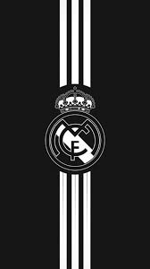

Реал Мадрид
Повна назва Real Madrid Club de Fútbol
Прізвисько білі, вершкові
Коротка назва Реал
Засновано 1902
Населений пункт Мадрид, Іспанія
 Стадіон Сантьяґо Бернабеу
Вміщує 85 454
Президент Іспанія Флорентіно Перес
Головний тренер Іспанія Хулен Лопетегі
Ліга Ла-Ліга
2017—18 3-e
«Реа́л Мадри́д» (ісп. Real Madrid Club de Fútbol) — іспанський футбольний клуб із Мадрида. Засновано 6 березня 1902 року. Один із найвідоміших і найсильніших клубів Іспанії та світу. Найкращий футбольний клуб ХХ століття за версією ФІФА.
Стадіон Сантьяґо Бернабеу
Вміщує 85 454
Президент Іспанія Флорентіно Перес
Головний тренер Іспанія Хулен Лопетегі
Ліга Ла-Ліга
2017—18 3-e
«Реа́л Мадри́д» (ісп. Real Madrid Club de Fútbol) — іспанський футбольний клуб із Мадрида. Засновано 6 березня 1902 року. Один із найвідоміших і найсильніших клубів Іспанії та світу. Найкращий футбольний клуб ХХ століття за версією ФІФА.
Офіційна дата створення — 6 березня 1902 р. Перша назва — Madrid Foot Ball Club (Мадридський футбольний клуб). Тоді в столиці існувало кілька любительських команд, а гравці вільно переходили з одного до іншого. У 1902 р. в Мадриді проходить турнір на честь коронації Альфонса XIII. У змаганнях взяло участь 5 команд — «Мадрид», «New Foot Ball Club» (ще одна столична команда), «Барселона», «Еспаньйол» (Барселона) і «Атлетик» (Більбао). «Мадрид» у півфіналі поступився 1:3 «Барселоні» і переміг «Еспаньйол» в матчі за 3-тє місце. А переможцем став «Атлетик». Згодом турнір назвали «Копа дель Рей», і перший його розіграш вважають першим Кубком Іспанії з футболу. У другому розіграші «Мадрид» програв фінал баскському «Атлетику». У 1905–1908 рр. мадридська команда здобула Кубок чотири рази поспіль, а 1909 р. за молодіжну команду «Мадрида» почав виступати 14-річний Сантьяґо Бернабеу — майбутній президент клубу.
Король Альфонс XIII у 1920 р. дозволив додати до назви команди титульне слово real («королівський»). Саме з такою назвою клуб і відомий зараз у всьому світі. «Реал» був одним з ініціаторів створення національної першості. Перший чемпіонат Іспанії відбувся з лютого по червень 1929 р., «Реал» посів 2 місце, чемпіоном стала «Барселона». Наступного сезону (1929/30) клуб посів 5-е місце серед 10 команд. Для амбітного керівництва це було незадовільним результатом. Змінився президент, тренером почав працювати угорець Ліппо Ґертца (проте в ті роки тренери працювали в «Реалі» недовго — переважно 1-2 роки). Мадридці придбали кількох сильних футболістів: одного з найкращих воротарів Європи Рікардо Самору, захисника Хасінто Кінкосеса та інсайда Луїса Реґейро. Усіх їх запрошували до збірної Іспанії. «Реал» почав славитися найкращим захистом в Іспанії. Самора став кумиром для шанувальників «вершкових». У сезоні 1931/32 команда не програла жодного матчу (з 18), а на своєму полі пропустила лише 4 м'ячі. «Реал» уперше став чемпіоном Іспанії. У чотирьох наступних сезонах мадридці жодного разу не опустилися нижче 2-го місця (1 титул чемпіонів, тричі 2-ге місце) і двічі здобули Кубок Іспанії. У 1936 почалась громадянська війна.
В 1939 році збройні сутички припинились — в Іспанії встановили режим генерала Франко. Клубний стадіон «Чамартін» майже повністю зруйнували повітряні бомбардування. Арену швидко відбудували, але з довоєнного складу залишилося тільки кілька гравців. Нова влада дещо симпатизувала мадридському «Атлетіко» (йому присвоїли нову, армійську наву «Атлетіко Авіасьйон»), що й виграв 3 з перших 4 післявоєнних чемпіонатів. «Реал» на початку та в середині сорокових виступав дуже нестабільно: 4, 6, 2, 10, 7, 2, 4, 7 місця за період від 1940 до 1947 року.
У 1943 р. президентом клубу став Сантьяґо Бернабеу — людина, яка розпочала нову епоху в історії «Реала». Він почав перетворювати клуб на бізнес-структуру, яка зможе давати великі прибутки і видатні спортивні результати.  До середини 50-х років минулого століття, коли в Європі вирішили створити континентальну федерацію футболу, яке налагодило б регулярне проведення змагань як клубних, так і національних команд, мадридський «Реал» не був головним авторитетом в Іспанії. Однак саме «Реал» виграв першість 1954/55, завдяки чому став першим іспанським делегатом в Кубку європейських чемпіонів. З того моменту «Реал» утвердився на європейській вершині на п'ять років. Успіхи на міжнародній арені супроводжували і перемоги у внутрішньому чемпіонаті, яких в період з 1954 по 1969 рік було 12. Протягом півтора десятка років виходило так, що якщо мадридці і поступалися вдома першістю, то обов'язково вигравали Кубок чемпіонів. Таким чином, вони постійно брали участь в найпрестижнішому європейському турнірі впродовж 15 років поспіль, вперше не потрапивши до нього лише в 1970 році. В ту золоту епоху в «Реалі» сяяли натуралізований аргентинець Альфредо Ді Стефано (кращий футболіст Європи 1957 і 1959 років), француз Раймон Копа (володар «Золотого м'яча» 1958 року), угорець Ференц Пушкаш, Франсиско Хенто - шестиразовий володар Кубка чемпіонів. У середині 60-х компанію «довгожителеві» Хенто становили Хосе Сантамарія, Амансіо, Піррі. Поступово після завершення кар'єри гравців ветеранів команди, переможні традиції в Європі було втрачено. Наступного зльоту довелося чекати майже двадцять років, коли прийшло нове покоління на чолі з Еміліо Бутрагеньо, найближчими сподвижниками якого були Мічел, Уго Санчес, Маноло Санчіс, Мартін Васкес і Мігель Пардесія. Вони виграли два Кубки УЄФА і п'ять чемпіонатів поспіль.
1970–2000 У середині сімдесятих «Реал» відзначився розгромною перемогою над «Барселоною» (4:0) у фіналі Кубка Іспанії сезону 1973/1974. У 1978 році «Реал» придбав Улі Штіліке і Хуаніто, які, незважаючи на несхожість ігровий манери, на довгі роки стануть ідолами мадридських уболівальників. 4 червня 1980 року мадридці перемогли в фіналі Кубка країни, розгромили «Кастілья» 6:1. На наступний рік «Реал» знову нагадав про себе Європі, вийшовши у фінал Кубка європейських чемпіонів. Однак в матчі з «Ліверпулем» мадридці, керовані Вуядіном Бошковим, змушені були поступитися з рахунком 0:1. У грудні 1983 року тренером «Реала» став Альфредо ді Стефано, а команду поповнили Мартін Ескер, Мічел, Санчіс і Еміліо Бутрагеньо, який зовсім скоро став одним з символів команди. Уже в першій грі за «королівський» клуб Бутрагеньо відзначився двічі і приніс перемогу мадридцям в матчі проти «Кадіса». 24 травня 1985 року посаду президента зайняв Рамон Мендоса, чиє правління буде відзначено видатними досягненнями. У 1985 і 1986 роках мадридці завойовували Кубок УЄФА, обігравши в фінальних матчах «Відеотон» і «Кельн». На своєму полі «Реал» виступав особливо натхненно: здавалося, його гравцям під силу відігратися за будь-якого рахунку. Одного разу їм вдалося зробити і зовсім щось неймовірне: програвши менхенгладбахській «Боруссії» з рахунком 1:5, мадридці провели на «Сантьяго Бернабеу» чотири м'ячі і вийшли до наступного раунду. Після кількох невдалих сезонів пост головного тренера «Реала» зайняв Хорхе Вальдано, який до цього досить вдало попрацював в «Тенерифе». Наставник довірив місце в основному складі Редондо, Лаудрупу, Амавіска, Кіке Флорес. 8 січня 1995 роки команда Вальдано знищила своїх головних суперників з «Барселони», перемігши в матчі чемпіонату з рахунком 5:0, а згодом завоювала чемпіонський титул. Однак наступний сезон «Реал» провалив, і місце на тренерському містку в липні 1996 року зайняв знаменитий італієць Фабіо Капелло. Помітно оновився і склад команди, в яку влилися Зеєдорф, Міятович і Роберто Карлос. Для перемоги в чемпіонаті команді Капелло вистачило одного сезону. У травні 1998 року «Реал» всьоме завойовує Кубок чемпіонів, перемігши у вирішальному матчі «Ювентус» (1:0), а через кілька місяців виграє і Міжконтинентальний кубок у «Васко да Гами». Після невдалого сезону 1998/99 керівництво «Реала» вирішило довірити пост головного тренера Вісенте дель Боске і не прогадало: клуб увосьме здобув Кубок чемпіонів, обігравши в фінальному матчі «Валенсію» (3:0). Відмінно проявив себе Рауль, який став справжнім лідером команди. У 2001 році «Реал» здобув 28-й титул чемпіона країни.
Докладніше: Галактікос Флорентіно Перес Новим президентом був обраний амбітний Флорентіно Перес, який вирішив зібрати в «Реалі» всіх кращих футболістів планети. Свою діяльність Перес почав з покупки португальця Луїша Фігу у «Барселони» за рекордні 71 млн євро. Через рік до лав «Реала» влився Зінедін Зідан, за якого заплатили «Ювентусу» ще більше - 75 мільйонів. Ще через рік з «Інтера» прибув Роналдо, влітку 2003 року - Бекхем, в 2004 - Оуен. Таким чином, в сезоні 2004/05 разом грали чотири футболісти, володарі різних років «Золотого м'яча»: Роналдо (1997 і 2002), Зідан (1998), Фігу (2000), Оуен (2001). Це зібрання зірок стали називати «Галактікос». За п'ять з гаком років правління Переса (він склав повноваження в лютому 2006 року) «Реал» двічі ставав чемпіоном Іспанії і лише раз виграв Лігу чемпіонів УЄФА (в сезоні 2001/2002). Рамон Кальдерон Після Флорентіно Переса президентом Реала був обраний Рамон Кальдерон, стиль керівництва якого відрізнявся від стилю попередника. Кальдерон не ставив собі за мету покупку найкращих гравців, хоча його передвиборною обіцянкою була покупка Кріштіану Роналду і Кака, що у нього так і не вийшло. Насамперед новий президент взявся за чистку і омолодження складу, який в той час переживав не найкращі часи. За час президентства Кальдерона були продані Бекхем, Роберто Карлос, Робіньо, Роналдо, тобто вся «спадщина» Переса, хоча за часів правління Кальдерона були зроблені вдалі покупки: Ван Ністелрой, Каннаваро, Ігуаїн, Снейдер, Пепе. Але головною зміною стала зміна головного тренера: ним знову став Капелло, сильний і незалежний фахівець. Перший же сезон приніс «вершковим» перемогу в Прімері, але в Лізі чемпіонів команда знову програла в 1/8 фіналу, поступившись за сумою двох зустрічей мюнхенській «Баварії» (загальний рахунок - 4:4). Після закінчення першого сезону, незважаючи на перший за останні чотири роки титул чемпіона Іспанії, керівництво «Реала» звільняє італійського тренера, мотивуючи це рішення «невиразною грою команди». Місце головного тренера було віддано німецькому фахівцеві і тренеру «Хетафе» Бернду Шустеру. З німцем «білі» завоювали Суперкубок і перемогли в чемпіонаті Іспанії, який був виграний достроково. Тому в "Ель Класико" (рахунок - 4:1), який проходив на «Сантьяго Бернабеу», за іспанською традицією гравці «Барселони» були змушені вітати дострокових чемпіонів «живим» коридором і оплесками. Однак в Лізі чемпіонів прогресу все також не спостерігалося. В 1/8 фіналу команда була вибита з турніру італійською «Ромою» (загальний рахунок - 2:4). У 2009 році через скандал з підтасовуванням голосів на виборах 2006 року Рамон Кальдерон подав у відставку. За чотири роки правління Кальдерона «Реал» двічі поспіль ставав чемпіоном Іспанії і один раз брав Суперкубок. У 2011 році «Реал» опинився на другій сходинці рейтингу найдорожчих футбольних клубів світу журналу Forbes. Вартість «Королівського клубу» підскочила з 1,3 млрд доларів до 1,5 млрд.
1 червня 2009 року Флорентіно Перес знову став президентом «Реала», причому без голосування, так як всі конкуренти зняли свої кандидатури. Після свого повернення Перес почав відтворювати абсолютно новий «галактікос». Для початку в команді відбулися зміни в керівництві: радником президента став колишній гравець «Реала» Зінедін Зідан. 9 червня після тривалих перемовин в «Реал» перейшов півзахисник італійського «Мілана» і збірної Бразилії Кака за 68 млн євро. Він підписав шестирічний контракт з клубом і став першим зоряним новачком після повернення Переса. Потім був підписаний контракт з найкращим гравцем світу 2008 року Кріштіану Роналду, який давно мріяв одягти майку «вершкових». За португальця «Реал» виклав 80 мільйонів фунтів стерлінгів (93,4 мільйона євро). 25 червня «Реал» підписав 23-річного Рауля Альбіоля з «Валенсії», сума трансферу Альбіоля склала 15 мільйонів євро. 1 липня 2009 року «Ліон» офіційно підтвердив перехід Каріма Бензема в «Реал». Сума трансферу склала 35 мільйонів євро. У стан «Реала» повернулися хавбек Естебан Гранеро і правий захисник Альваро Арбелоа з «Ліверпуля». Сума трансферу Арбелоа склала 4 млн євро, контракт підписаний на 5 років. Пару Арбелоа склав Хабі Алонсо, також перейшов з «Ліверпуля» 5 серпня. Алонсо був оцінений в 30 млн фунтів стерлінгів.
Незважаючи на солідні придбання, команді так і не вдалося завоювати хоча б один трофей за сезон. У чемпіонаті Іспанії «Реал» посів підсумкове друге місце, поступившись «Барселоні», при цьому програвши в обох очних зустрічах. Клуб знову невдало виступив у Лізі Чемпіонів, в шостий раз поспіль не зумівши подолати стадію 1/8 фіналу. А в Кубку Іспанії команда вибула з боротьби вже на першому етапі в протистоянні з командою з третього іспанського дивізіону «Алькоркон». За підсумками сезону головний тренер Мануель Пеллегріні був звільнений з поста за незадовільні результати. Після нетривалих переговорів головним тренером «Реала» призначений португалець Жозе Моурінью, який з італійським «Інтером» оформив требл.
Влітку не обійшлося без звичної трансферної активності клубу, хоча і не з таким розмахом, як роком раніше. На придбання було витрачено понад 70 млн євро, а команду поповнили досвідчений португальський захисник Рікарду Карвалью, молоді іспанські півзахисники Педро Леон і Серхіо Каналес, представники нового покоління німецького футболу Самі Хедіра і Месут Озіл, а також перспективний аргентинський вінгер Анхель Ді Марія.
Сезон 2010-2011 «Реал» почав досить успішно, але в підсумку став другим. Набагато успішніше справи йшли в Кубку Іспанії. Команда впевнено дійшла до фіналу, де на них чекала все та ж «Барселона». «Реал» в непростому для обох команд матчі зумів перемогти: гол Кріштіану Роналду, забитий у додатковий час, приніс команді довгоочікуваний трофей. У Лізі чемпіонів «Реал» дійшов до півфіналу, де в напруженому, дуже непростому і неоднозначному для суддівства протистоянні, за сумою двох матчів поступився «Барселоні».
Влітку 2011 року клуб продовжив зміцнювати склад. Були придбані півзахисники Нурі Шахін і Хаміт Алтинтоп, нападник Хосе Кальєхон, а також захисники Рафаель Варан і Фабіу Коентрау. Крім того, 22 червня клуб офіційно оголосив про розширення повноважень головного тренера команди Жозе Моурінью, якій отримав функції спортивного менеджера. Таким чином, «Реал Мадрид» здійснив перехід до «англійської» моделі управління командою.
Мадридський «Реал» в сезоні 2011/12 встановив новий рекорд Прімери, набравши за один сезон 100 очок. «Королівський клуб» перевершив досягнення «Барселони», яка в чемпіонаті 2009/10 досягла позначки в 99 балів. Крім того, «Реал» став першою командою, якій за один сезон вдалося перемогти в 32 зустрічах, при цьому «Реал» встановив рекорд за кількістю забитих голів за сезон, підопічні Моурінью забили 121 гол в чемпіонаті Іспанії.
Влітку 2012 був куплений півзахисник Тоттенхема Лука Модрич і взятий в оренду півзахисник Челсі Майкл Есьєн. Але з клубу пішов цілий ряд півзахисників: Фернандо Гаго перейшов до Валенсії, Серхіо Каналес також перейшов до Валенсії, Хаміт Алтинтоп перейшов у Галатасарай, Естебан Гранеро перейшов в Куїнз Парк Рейнджерс, Лассана Діарра перейшов в Анжі, Нурі Шахін на правах оренди перейшов до Ліверпуля, а взимку 2012 повернувся в Боруссію. Також влітку клуб покинули захисник Даніель Карвахаль, який перейшов в Байєр 04 і захисник Ройстон Дренте, який перейшов в «Аланію». Взимку в клуб повернувся воротар Дієго Лопес, який перед цим виступав в «Вільярреалі» і «Севільї».
Сезон 2012/2013 «Реал Мадрид» почав з перемоги над «Барселоною» в Суперкубку Іспанії (4:4 за сумою двох матчів). У Примері «Реал» посів друге місце. У Кубку Іспанії «Реал» дійшов до фіналу, попутно вибивши з турніру «Барселону», але в фіналі поступився «Атлетіко» (1:2). У лізі чемпіонів «Реал» закінчив виступи в півфіналі турніру, поступившись дортмундській «Боруссії» (3:4 за сумою двох матчів).
20 травня стало відомо, що Жозе Моурінью покине клуб. 2 червня Флорентіно Перес був переобраний президентом «Реала». 27 червня Карло Анчелотті став новим головним тренером команди. Помічниками головного тренера було призначено француза Зінедіна Зідана та англійця Пола Клемента.
Влітку 2013 року був куплений ряд півзахисників: вінгер «Тоттенгема» Гарет Бейл, опорник «Сан-Паулу» Каземіро, хавбек «Реал Сосьєдаду» Асьєр Ільярраменді і півзахисник «Малаги» Іско. Так само після сезону в «Байєрі» в клуб повернувся Даніель Карвахаль. З Реал Мадрид Кастілья до клубу прийшли: російський півзахисник Денис Черишев та іспанський нападник Хесе Родрігес. Однак клуб покинули такі гравці: в «Наполі» перейшли нападник Гонсало Ігуаїн, захисник Рауль Альбіоль, нападник Хосе Кальєхон; півзахисник Месут Озіл перейшов в «Арсенал», півзахисник Кака - в «Мілан», півзахисник Педро Леон став гравцем «Хетафе». На правах вільного агента клуб покинули Рікарду Карвалью, який став гравцем «Монако» і Антоніо Адан. Майкл Есьєн повернувся в «Челсі», а на початку вересня Денис Черишев на правах оренди став гравцем «Вільяреала».
16 квітня 2014 «Реал» виграв Кубок Іспанії, обігравши в фіналі «Барселону» з рахунком 2: 1. Вирішальний гол забив Гарет Бейл.
24 травня 2014 «вершкові» виграли десятий Кубок Чемпіонів УЄФА, обігравши в фіналі «Атлетіко Мадрид» з рахунком 4: 1. 12 серпня 2014 року клуб виграв Суперкубок УЄФА. 20 грудня виграли Клубний чемпіонат світу, у фіналі здобувши перемогу над аргентинським «Сан-Лоренсо». Голи забили Серхіо Рамос і Гарет Бейл. У сезоні 2016/2017 «Реал Мадрид» в 7-й раз вийшов в 1/2 Ліги чемпіонів, тим самим побивши рекорд «Барселони», після чого футболісти клубу вдванадцяте стали володарями кубку Ліги Чемпіонів, перегравши в фіналі у Кардіффі туринський «Ювентус» з рахунком 4:1.
26 травня 2018 «вершкові» встановили абсолютний рекорд Ліги чемпіонів здобувши цей трофей втринадцяте, перегравши на стадіоні НСК «Олімпійський» у Києві англійський «Ліверпуль» у фінальному матчі з рахунком 3:1.